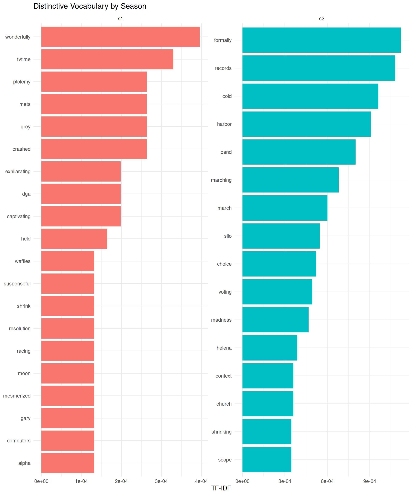

So far, we have explored word frequencies and n-grams to understand common terms and phrases in our text data. However, simply counting words has a limitation: some words are frequent because they appear often across all documents, not because they are particularly meaningful for a specific document or group.
For example, in our Severance dataset, words like “season,” “episode,” and “show” might appear frequently in comments about both Season 1 and Season 2. While these words are common, they don’t help us understand what makes each season’s discussion distinctive.
This is where TF-IDF (Term Frequency-Inverse Document Frequency) becomes useful. TF-IDF is a statistical measure that evaluates how important a word is to a document in a collection of documents (corpus). It helps us identify words that are frequent in one document but rare across the entire corpus—precisely the words that make a document unique.
Understanding TF-IDF
TF-IDF combines two metrics:
Term Frequency (TF): How often a word appears in a document
Inverse Document Frequency (IDF): How rare a word is across all documents
The formula is:
\[\text{TF-IDF} = \text{TF} \times \text{IDF}\]
Where:
\[\text{TF}(t, d) = \frac{\text{count of term } t \text{ in document } d}{\text{total terms in document } d}\]
\[\text{IDF}(t) = \log\left(\frac{\text{total number of documents}}{\text{number of documents containing term } t}\right)\]
A word gets a high TF-IDF score when:
It appears frequently in a particular document (high TF)
It appears in few other documents (high IDF)
A word gets a low TF-IDF score when:
It appears in many documents (low IDF), even if it’s frequent in one document
Calculating TF-IDF
In our case, we want to compare the vocabulary between Season 1 and Season 2 comments. We’ll treat each season as a “document” and calculate TF-IDF to find which words are distinctive to each season.
First, we need to extract season information from the id column and tokenize the comments:
# Calculate TF-IDF by seasoncomments_tfidf <- comments %>%mutate(season =str_extract(id, "s[12]")) %>%# Extract season (s1 or s2)unnest_tokens(word, comments) %>%# Tokenize into wordscount(season, word, sort =TRUE) # Count words per seasonhead(comments_tfidf)
# A tibble: 6 × 3
season word n
<chr> <chr> <int>
1 s2 severance 4200
2 s2 season 3219
3 s1 severance 1840
4 s2 finale 1833
5 s1 season 1261
6 s2 show 1020
Now we can apply the bind_tf_idf() function from the tidytext package, which automatically calculates TF, IDF, and TF-IDF for us:
Notice how these words are much more specific and meaningful than simply looking at the most frequent words. These are the words that truly characterize each season’s discussion.
Visualizing Distinctive Vocabulary
To better understand the distinctive vocabulary of each season, we can create a visualization comparing the top TF-IDF words:
# Prepare data for visualizationtop_tfidf_words <- comments_tfidf %>%group_by(season) %>%slice_max(tf_idf, n =15) %>%ungroup() %>%mutate(word =reorder_within(word, tf_idf, season))# Plot distinctive vocabulary by seasonggplot(top_tfidf_words, aes(tf_idf, word, fill = season)) +geom_col(show.legend =FALSE) +facet_wrap(~season, scales ="free") +scale_y_reordered() +labs(x ="TF-IDF",y =NULL,title ="Distinctive Vocabulary by Season" ) +theme_minimal()

This visualization clearly shows which words are most characteristic of each season’s discussions. Words with higher TF-IDF scores are those that appear frequently in one season but not in the other, making them useful markers of distinctive content.
Comparing TF-IDF to Raw Frequency
To appreciate the value of TF-IDF, let’s compare it to simple word counts. We’ll look at the top words by frequency versus the top words by TF-IDF for Season 1:
# Top words by raw frequency for Season 1top_freq_s1 <- comments %>%filter(grepl("^s1", id)) %>%unnest_tokens(word, comments) %>%count(word, sort =TRUE) %>%head(15)# Top words by TF-IDF for Season 1top_tfidf_s1 <- comments_tfidf %>%filter(season =="s1") %>%arrange(desc(tf_idf)) %>%head(15)# Top 15 words by frequency (Season 1)print(top_freq_s1)
# A tibble: 15 × 2
word n
<chr> <int>
1 severance 1840
2 season 1261
3 finale 787
4 show 632
5 tv 402
6 apple 304
7 best 276
8 can 220
9 just 208
10 wait 203
11 one 193
12 watch 191
13 now 153
14 good 148
15 seen 142
# Top 15 words by TF-IDF (Season 1)print(top_tfidf_s1 %>%select(word, n, tf_idf))
The raw frequency list likely includes many words that are common across both seasons, while the TF-IDF list highlights words that are specifically important to Season 1 discussions.
When to Use TF-IDF
TF-IDF is particularly useful for:
Document comparison: Identifying what makes each document unique in a collection
Feature extraction: Preparing text data for machine learning by emphasizing distinctive words
Topic discovery: Finding characteristic vocabulary for different groups or categories
Search and retrieval: Ranking documents by relevance to a query (search engines use variations of TF-IDF)
TipLimitations of TF-IDF
While TF-IDF is powerful, it has some limitations:
No semantic understanding: It treats words as independent units and doesn’t understand synonyms or context
Corpus dependency: TF-IDF scores depend on the entire corpus, so adding or removing documents changes the scores
Document length bias: Can be affected by document length differences (though this is partially addressed by normalization)
For more advanced semantic analysis, techniques like word embeddings or transformer models might be more appropriate.
TF-IDF bridges the gap between simple word counting and more sophisticated text analysis techniques. By weighing words based on both their local importance (in a document) and their global rarity (across the corpus), it helps us discover the vocabulary that truly distinguishes different parts of our text data.
Source Code
---title: "TF-IDF: Finding Distinctive Vocabulary"engine: knitrformat: html: fig-width: 10 fig-height: 12 dpi: 300editor_options: chunk_output_type: inline---```{r}#| include: false# This is just to render the document correctly in the CI/CD pipelinelibrary(tidyverse)library(tidytext)comments <- readr::read_csv("../../data/clean/comments_preprocessed.csv") ```So far, we have explored word frequencies and n-grams to understand common terms and phrases in our text data. However, simply counting words has a limitation: some words are frequent because they appear often across *all* documents, not because they are particularly meaningful for a specific document or group.For example, in our Severance dataset, words like "season," "episode," and "show" might appear frequently in comments about both Season 1 and Season 2. While these words are common, they don't help us understand what makes each season's discussion *distinctive*.This is where **TF-IDF (Term Frequency-Inverse Document Frequency)** becomes useful. TF-IDF is a statistical measure that evaluates how important a word is to a document in a collection of documents (corpus). It helps us identify words that are frequent in one document but rare across the entire corpus—precisely the words that make a document unique.## Understanding TF-IDFTF-IDF combines two metrics:1. **Term Frequency (TF)**: How often a word appears in a document2. **Inverse Document Frequency (IDF)**: How rare a word is across all documentsThe formula is:$$\text{TF-IDF} = \text{TF} \times \text{IDF}$$Where:$$\text{TF}(t, d) = \frac{\text{count of term } t \text{ in document } d}{\text{total terms in document } d}$$$$\text{IDF}(t) = \log\left(\frac{\text{total number of documents}}{\text{number of documents containing term } t}\right)$$A word gets a **high TF-IDF score** when:- It appears frequently in a particular document (high TF)- It appears in few other documents (high IDF)A word gets a **low TF-IDF score** when:- It appears in many documents (low IDF), even if it's frequent in one document## Calculating TF-IDFIn our case, we want to compare the vocabulary between Season 1 and Season 2 comments. We'll treat each season as a "document" and calculate TF-IDF to find which words are distinctive to each season.First, we need to extract season information from the `id` column and tokenize the comments:```{r}# Calculate TF-IDF by seasoncomments_tfidf <- comments %>%mutate(season =str_extract(id, "s[12]")) %>%# Extract season (s1 or s2)unnest_tokens(word, comments) %>%# Tokenize into wordscount(season, word, sort =TRUE) # Count words per seasonhead(comments_tfidf)```Now we can apply the `bind_tf_idf()` function from the `tidytext` package, which automatically calculates TF, IDF, and TF-IDF for us:```{r}# Apply TF-IDF calculationcomments_tfidf <- comments_tfidf %>%bind_tf_idf(word, season, n)head(comments_tfidf, 15)```The resulting data frame includes:- `tf`: Term frequency (proportion of times the word appears in that season)- `idf`: Inverse document frequency (how rare the word is across seasons)- `tf_idf`: The product of TF and IDFLet's examine the top words by TF-IDF for each season:```{r}# Top 10 distinctive words per seasoncomments_tfidf %>%group_by(season) %>%slice_max(tf_idf, n =10)```Notice how these words are much more specific and meaningful than simply looking at the most frequent words. These are the words that truly characterize each season's discussion.## Visualizing Distinctive VocabularyTo better understand the distinctive vocabulary of each season, we can create a visualization comparing the top TF-IDF words:```{r}# Prepare data for visualizationtop_tfidf_words <- comments_tfidf %>%group_by(season) %>%slice_max(tf_idf, n =15) %>%ungroup() %>%mutate(word =reorder_within(word, tf_idf, season))# Plot distinctive vocabulary by seasonggplot(top_tfidf_words, aes(tf_idf, word, fill = season)) +geom_col(show.legend =FALSE) +facet_wrap(~season, scales ="free") +scale_y_reordered() +labs(x ="TF-IDF",y =NULL,title ="Distinctive Vocabulary by Season" ) +theme_minimal()```This visualization clearly shows which words are most characteristic of each season's discussions. Words with higher TF-IDF scores are those that appear frequently in one season but not in the other, making them useful markers of distinctive content.## Comparing TF-IDF to Raw FrequencyTo appreciate the value of TF-IDF, let's compare it to simple word counts. We'll look at the top words by frequency versus the top words by TF-IDF for Season 1:```{r}# Top words by raw frequency for Season 1top_freq_s1 <- comments %>%filter(grepl("^s1", id)) %>%unnest_tokens(word, comments) %>%count(word, sort =TRUE) %>%head(15)# Top words by TF-IDF for Season 1top_tfidf_s1 <- comments_tfidf %>%filter(season =="s1") %>%arrange(desc(tf_idf)) %>%head(15)# Top 15 words by frequency (Season 1)print(top_freq_s1)# Top 15 words by TF-IDF (Season 1)print(top_tfidf_s1 %>%select(word, n, tf_idf))```The raw frequency list likely includes many words that are common across both seasons, while the TF-IDF list highlights words that are specifically important to Season 1 discussions.## When to Use TF-IDFTF-IDF is particularly useful for:1. **Document comparison**: Identifying what makes each document unique in a collection2. **Feature extraction**: Preparing text data for machine learning by emphasizing distinctive words3. **Topic discovery**: Finding characteristic vocabulary for different groups or categories4. **Search and retrieval**: Ranking documents by relevance to a query (search engines use variations of TF-IDF)::: {.callout-tip title="Limitations of TF-IDF"}While TF-IDF is powerful, it has some limitations:- **No semantic understanding**: It treats words as independent units and doesn't understand synonyms or context- **Corpus dependency**: TF-IDF scores depend on the entire corpus, so adding or removing documents changes the scores- **Document length bias**: Can be affected by document length differences (though this is partially addressed by normalization)For more advanced semantic analysis, techniques like word embeddings or transformer models might be more appropriate.:::TF-IDF bridges the gap between simple word counting and more sophisticated text analysis techniques. By weighing words based on both their local importance (in a document) and their global rarity (across the corpus), it helps us discover the vocabulary that truly distinguishes different parts of our text data.